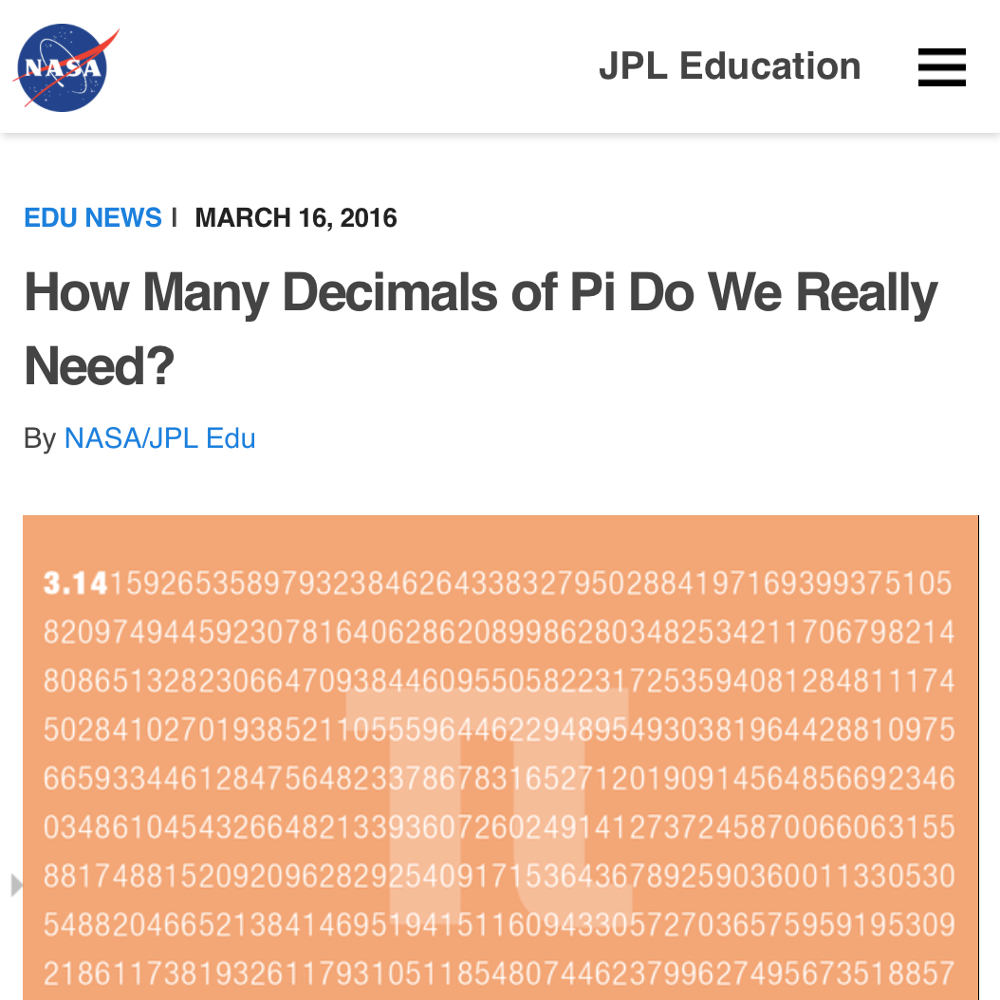

How Many Digits of Pie Do We Really Need?

A fascinating insight into why NASA's Jet Propulsion Laboratory only uses pi to the 15th decimal place (3.141592653589793). I like the second example the most:
We can bring this down to home with our planet Earth. It is 7,926 miles in diameter at the equator. The circumference then is 24,900 miles. That's how far you would travel if you circumnavigated the globe (and didn't worry about hills, valleys, obstacles like buildings, rest stops, waves on the ocean, etc.). How far off would your odometer be if you used the limited version of pi above? It would be off by the size of a molecule. There are many different kinds of molecules, of course, so they span a wide range of sizes, but I hope this gives you an idea. Another way to view this is that your error by not using more digits of pi would be 10,000 times thinner than a hair!
Given this perspective, it makes you wonder why things like this exist. ("Because we can!" Uh huh.)
Previously: Walking The Beat In Mr. Rogers' Neighborhood Next: A Manager's FAQ